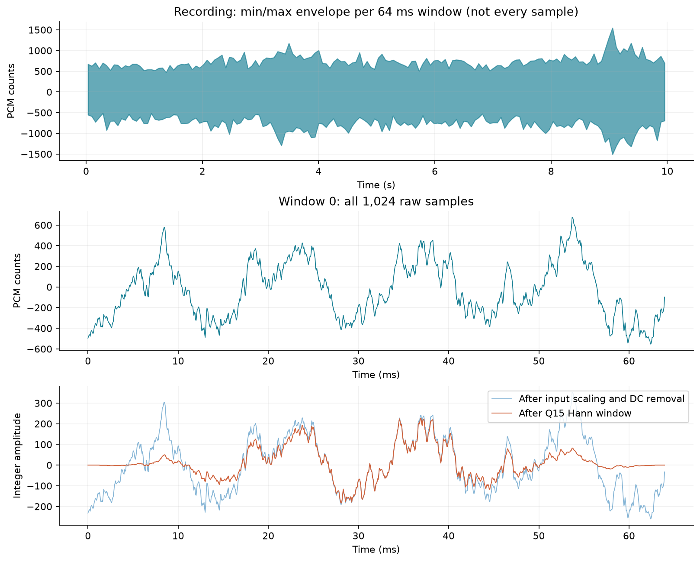
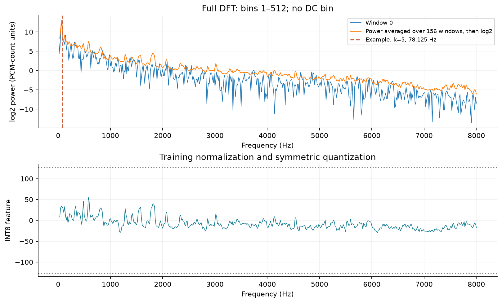
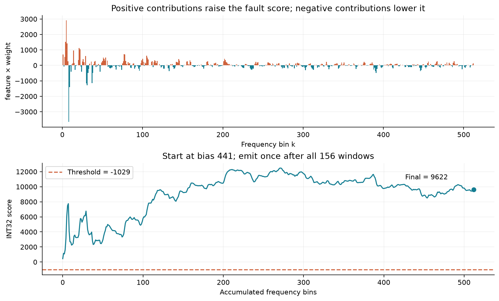

Listen to a Recording and Follow the FPGA Decision
Machine 00 · Public MIMII recordings · Mono 16 kHz · 9.984 seconds each
WAV files retain the original PCM values sent to the FPGA, without denoising or individual volume boosts. Lower your computer volume before playback. Listening impressions do not replace independent test metrics.
Start with the First 64 ms Window
Each recording contains 156 windows of 1,024 samples. The fault recording is examined below in detail; the FPGA outputs one recording-level decision only at the end.

Check Rounding with a Real Sample
Sample 256 (zero-based) is −267. Dividing by 2 gives −133.5; ties-to-even yields −134. The window mean is −16, so the centered value is −118. The Hann coefficient is 16384 (Q15). Right-shifting the product −1933312 by 15 bits with rounding gives −59.
RTL signed shifts, rounding, and saturation rules must therefore match Python.
The Spectrum Shows Energy at Each Frequency
Compute real, imaginary, and power values for 512 bins in each window. Average power over 156 windows first, then take log2 and normalize to −127…127 using training parameters. The vertical line in the plot is only an explanatory example; the model still uses all 512 bins.

Changing bins displays already computed explanation data; it does not modify the model, retrain it, or change the classification.
512 Multiply-Accumulates Plus a Bias
The classifier is logistic regression: score = 441 + Σ(feature × weight) The integer products sum to 9,181. The final score is 9,622 and exceeds the threshold −1,029, producing a fault decision. This integer score is not a fault probability.

Bin 5: 78.125 Hz, quantized feature 32, weight 91, contribution 32 × 91 = 2912. One bin’s contribution alone is not evidence of a fault mechanism.
How Software Values Map to Circuit States
| Computation step | RTL state or module |
|---|---|
| Complete-window capture, input scaling, and sum | known_capture |
| Sample read, DC removal, and windowing | PRE_READ → PRE_MULT → PRE_STORE |
| Frequency-component multiply-accumulate | DFT_INIT → DFT_RUN → DFT_SAVE |
| Real/imaginary squares and power sums across windows | REAL_INIT / WM_* / P_* |
| Logarithm, fixed-point normalization, linear classification | LOG_* / NORM_INIT / NN_MULT / NN_ACC |
| Hold final score and commit Flash log | FRAME_DONE → HOLD + replay controller |
The nine groups of fields recomputed for this walkthrough match existing RTL regression vectors; the final score matches two identical raw physical-board logs. Intermediates were recomputed in Python and correspond to existing simulation evidence; they were not all captured with physical-board probes.
Complete trace and hashes · First-window per-sample CSV · All features and multiply-accumulates CSV · Bin 5 cross-window accumulation CSV